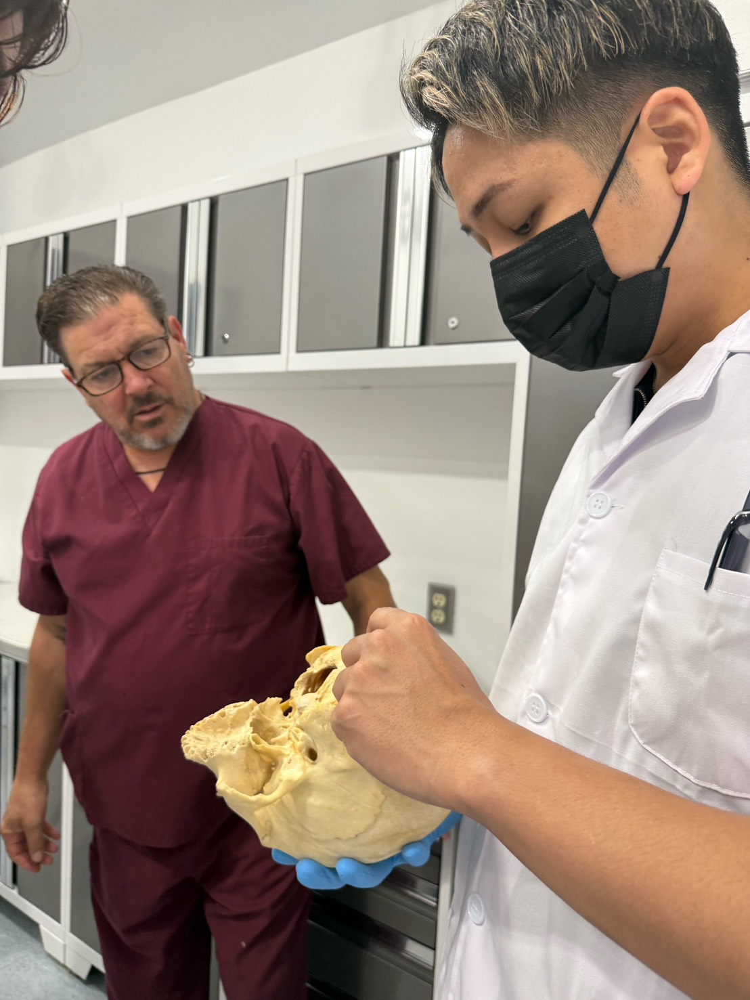

技術の、その先へ
FACE THE REALITY
- 手技は知っているが使い分けられない
- 関節を鳴らすことが目的になっている
- 禁忌や安全管理に不安がある
- 部分への施術に偏っている
- 全身のつながりを説明できない
- 学んでも現場で再現できない
- 評価から再評価まで組み立てられない
関節を動かす。
音を鳴らす。
それだけなら、零式である必要はない。
零 -ZERO- の思想
PHILOSOPHY
身体は壊れているのではない。
忘れているだけだ。本来の状態を。
人は最初から完成しているわけではない。不完全だからこそ学び、修正し、成長していく。
零とは「無」ではなく、すべてが始まる起点。
西洋医学。東洋医学。オステオパシー。カイロプラクティック。神経科学。経絡。
既存の流派や「型」に依存せず、必要なのは“今その人に必要な刺激”を見極めること。
不要なものを手放し、身体を“零”へ戻す。そこから本来の機能を再学習させる。
それは治療ではなく、「覚醒」である。
身体を学べば人生が変わる。
零式関節調整法とは
WHAT IS ZERO METHOD
「部分」ではなく「システム」
構造、神経、流れ。つま先から頭部、顎まで。身体は独立した「部分」の集まりではなく、一つの連動した「システム」です。全身のつながりの中で関節を評価します。
「音を鳴らす」ことが目的ではない
スラスト技術を含みますが、音を鳴らすことではなく、どの関節に、どの方向から、どの技術を使うべきかを判断し、本来の可動と感覚を解放することが真の目的です。
安全性と評価の徹底
禁忌事項を深く理解し、安全管理を徹底。決まった「型」に当てはめるのではなく、目の前の身体を的確に評価することで、安全かつ再現性のある関節調整を可能にします。
BASIC カリキュラム
DAY 1 - DAY 2
日数：2日間
時間：両日10:00〜17:00
総講習時間：12時間
実技比率：約70〜80％
対象：整体師、鍼灸師、柔道整復師、理学療法士、トレーナー、セラピストなど
修了条件：2日間の出席、実技チェック、安全管理テスト
※修了者には「零式‐関節調整法‐BASIC修了証」を発行（国家資格等を付与するものではありません）
1日目：下肢・骨盤・腰部
零式関節調整法の基礎概念
- 関節調整とは何か
- 関節可動域と関節の遊び
- モビライゼーションとスラストの違い
- キャビテーションが起こる仕組み
- 「音が鳴ること」と「調整できたこと」の違い
- 強い力を使わず、短く正確に刺激を入れる考え方
- 評価→調整→再評価の基本手順
安全管理とスクリーニング
- 適応と禁忌の判断 / 問診で確認する項目
- 骨折、脱臼、骨粗鬆症、炎症、腫瘍、感染症などの確認
- 神経症状、血管症状、レッドフラッグ
- エンドフィールの確認 / 痛みや恐怖心がある場合の対応
- スラストを行わない判断基準 / 同意確認と施術記録
足趾・足部・足関節
- 足趾関節 / 中足趾節関節 / 中足骨間 / 足根中足関節
- 舟状骨・立方骨周辺 / 距腿関節 / 距骨下関節 / 脛腓関節
- 背屈・底屈制限の評価 / 荷重時と非荷重時の再評価
- 足部調整後の立位・歩行変化
昼休憩
膝関節
- 膝蓋大腿関節 / 脛骨大腿関節 / 近位・遠位脛腓関節
- 屈曲・伸展制限の評価 / 回旋制限の確認
- 膝そのものを触る場合と、足関節・股関節を優先する場合
- 調整前後のスクワット・歩行評価
股関節・骨盤帯
- 股関節の牽引・滑り / 屈曲・伸展・内外旋の評価
- 寛骨の動き / 仙腸関節周辺 / 恥骨結合周辺の考え方
- 左右差と荷重戦略 / 骨盤を「歪み」という言葉だけで判断しない評価法
腰部・下肢統合
- 腰椎の分節的評価 / 腰部と股関節の鑑別
- 安全なポジショニング / 下肢から腰部までの施術順序
- 立位・前屈・後屈・回旋の再評価
- 下半身を10〜15分で確認する実践フロー / 1日目の実技チェック
2日目：上肢・胸郭・頸部・顎
前日の復習
- 評価手順の確認 / セットアップの修正
- 力みや押し込みが起こる原因 / 安全なスラスト方向の確認
指・手・手首・前腕
- 指節間関節 / 中手指節関節 / 中手骨間 / 手根骨周辺
- 橈骨手根関節 / 遠位橈尺関節 / 近位橈尺関節
- 握る、押す、支える動作の再評価 / 手首だけでなく、肘・肩まで確認する方法
肘関節
- 腕尺関節 / 腕橈関節 / 橈尺関節
- 屈曲・伸展制限 / 回内・回外制限
- 外側・内側に症状がある場合の評価 / 手関節・肩関節とのつながり
肩関節・肩甲帯
- 肩甲上腕関節 / 肩鎖関節 / 胸鎖関節 / 肩甲胸郭関節
- 挙上・外旋・内旋の評価 / 肩関節を直接調整する場合と、胸郭を優先する場合
- 調整後の挙上・結帯・結髪動作の再評価
昼休憩
胸椎・胸郭・肋骨
- 胸椎の分節評価 / 屈曲・伸展・回旋制限 / 肋椎関節・肋横突関節
- 呼吸時の肋骨運動 / 胸郭と肩関節の関係 / 胸郭と頸部の関係
- 呼吸を利用した低負荷の調整 / 胸椎調整後の呼吸・肩関節・頸部の再評価
頸部の評価と安全な調整
- 頸椎の基礎解剖 / 上位頸椎と下位頸椎の違い / 頸部を直接触る前の確認事項
- 神経・血管症状のスクリーニング / 頸部周辺の低負荷モビライゼーション
- 胸椎・肩甲帯・後頭部から介入する方法 / 頸部スラストを選択しない判断
※厚生労働省の注意喚起に基づき、頸椎への急激な回転・伸展を伴うスラストは講座範囲外とします。
顎関節・頭部
- 顎関節の開閉・左右差 / 下顎頭の動き / 咬筋・側頭筋・顎二腹筋との関係
- 頸部と顎関節の関係 / 顎関節への低負荷調整 / 頭部・後頭部への安全なアプローチ
※頭蓋骨へ強いスラストは行わず、顎・後頭部・頸部のつながりを評価します。
全身統合実技
受講者同士で実践：問診・安全確認 → 全身動作の評価 → 調整する関節の選択 → セットアップ → 関節調整 → 再評価 → 次に必要な提案
総括・修了
実技フィードバック / 今後の練習方法 / 臨床での注意点 / アドバンス講座への課題 / 修了証の授与
ADVANCE カリキュラム
DAY 3 - DAY 4
関節を動かす技術から、身体全体を読み解き、必要な一手を選択する技術へ。
症状が出ている部位だけを調整するのではなく、全身の連動を評価し、臨床的に判断できる実践力を身につけます。
受講条件：零式関節調整法BASIC修了者（または同等の徒手療法の基礎技術・解剖知識を有する方）
1日目：下肢・骨盤・体幹の臨床応用
アドバンス概論
- 「硬い関節＝調整すべき関節」ではない
- 症状の場所と原因となる場所の違い
- 構造・機能・神経・感覚・運動・背景から考える
- 局所だけでなく全身から捉える / 調整前後で必ず変化を確認する理由
零式・関節評価法
- 自動運動と他動運動 / 関節遊び / エンドフィール / 疼痛誘発動作
- 荷重位と非荷重位の違い / 調整前の比較基準となる動作
- 「動かない関節」と「動かしてはいけない関節」の判別
- 痛みの原因関節を絞り込む / 一つの結果で決めつけない評価法
安全管理・禁忌・技術選択
- スラストの絶対・相対禁忌 / 術後・外傷後への対応
- スラストを中止する判断 / モビライゼーションへの切り替え
- 施術中・後に異変が出た場合の対応
※頸部は単独のテストだけで判断せず、リスク因子・身体所見を統合して判断します（IFOMPT公式フレームワーク）。
昼休憩
足部・足関節・膝関節の応用
- 距腿関節と距骨下関節の鑑別 / 内・外側縦アーチ、横アーチ
- 回内・回外制限と全身への影響 / 背屈制限への原因別アプローチ
- ベーシック技術が決まらない場合のポジション変更 / 体格差への対応
- 膝関節の回旋評価 / 伸展制限と屈曲制限の鑑別 / 膝痛に対し足・股関節から介入する判断
股関節・骨盤帯の応用
- 股関節の滑り・制限の鑑別 / 骨盤による代償運動の見分け方
- 寛骨・仙骨・腰椎の関連性 / 左右非対称と症状の関係
- 腰痛に対して股関節から介入するケース / 股関節痛に対して足部・骨盤から介入するケース
下肢から体幹への連鎖統合
- 足部→膝→股関節→骨盤→脊柱の連動 / 立位・歩行・スクワット評価
- どこから調整を始めるか / 複数箇所を調整しすぎない考え方
2日目：脊柱・上肢・頭頸顎の臨床応用
前日の復習・技術修正
- セットアップ・コンタクトポイント・立ち位置の確認
- 力ではなく方向と固定で調整する / 音を目的にしない調整法
腰椎・胸椎・肋骨の応用
- 腰椎と股関節の鑑別 / 腰椎へ直接介入しない方がよいケース
- 骨盤・胸郭から腰部を変化させる方法
- 胸椎伸展・回旋制限 / 吸気・呼気による肋骨評価
- 頸部痛・肩痛に対する胸郭からの介入 / 座位・背・腹臥位の術式選択
全脊柱の調整順序
- 腰椎、胸椎、骨盤のどこから触るべきか / 呼吸を先に変えるケース
- 「最小限の介入で最大限の変化」を作る方法
昼休憩
肩甲帯・肩・肘・手関節の応用
- 肩甲骨と上腕骨の連動 / 上腕骨頭の偏位 / 肩関節制限の原因鑑別
- 肩痛に対する胸・肋・頸からの介入 / スポーツ動作への調整
- 握力低下と手関節可動性 / 肘痛・手首痛への肩甲帯からの介入
頸椎・上位頸椎の安全な臨床応用
- 触れる前のスクリーニング（頭痛・めまい等） / 血管・神経・筋骨格性の可能性
- 上位と下位頸椎の鑑別 / 頸椎と胸椎・肩甲帯の関連
- 頸椎への直接的なスラストを避ける判断 / 胸郭から頸部を変化させる方法
顎関節・頭頸部の統合
- 顎関節の偏位評価 / 下顎骨と側頭骨の関係 / 顎関節と上位頸椎の関連
- 食いしばり・開口制限への考え方 / 顎→頸椎→胸郭の連動
総合ケーススタディ
（例）足関節背屈制限を伴う膝痛、胸椎制限を伴う肩痛、全身に複数の制限があるケース等
実践：問診・リスク確認 → 原因候補の絞り込み → 最初の介入 → 再評価 → 次の介入または運動療法
実技確認・修了
安全確認 / セットアップ / 調整と再評価 / 臨床推論の言語化
BASICとADVANCEの明確な違い
| BASIC | ADVANCE |
|---|---|
| 各関節の基本技術を学ぶ | 症例に合わせて技術を選択する |
| 正しい形を覚える | 体格・症状に合わせて形を変える |
| 関節単体への介入 | 全身の運動連鎖から介入 |
| 可動域を確認する | 原因と代償を鑑別する |
| 技術の成功を目指す | 臨床結果と安全性を重視する |
| 調整できるようになる | 調整しない判断もできる |
| 手技中心 | 評価・推論・再評価中心 |
4日間で得られる進化
TRANSFORMATION
BASICで技術の土台を作り、ADVANCEで臨床の判断力へと昇華させる。
知る
触れる
安全に行う
評価する
選択する
組み合わせる
再評価する
講師紹介
INSTRUCTOR

TOTAL BODY FITNESS THEORY代表
原口 慶篤 NORIATSU HARAGUCHI
パーソナルトレーナー兼整体師として12年以上のキャリアを持ち、一般の方からプロアスリートまで幅広い層の身体を担当。施術、パーソナルトレーニング、企業研修、国内外での講師活動を展開する。
保有資格・学習歴
- NASM-PES
- NSCA-CPT
- 解剖実習修了 5回
- オステオパシー
- スラスト BASIC・ADVANCE
- 内臓調整
- 赤十字救急救命関連資格
解剖実習の記録（計5回修了）
生きた身体の「真実」を知るために。人体解剖実習を重ね、三次元的な構造と機能の本質を追求し続けています。




受講費用
PRICE
【推奨】BASIC＋ADVANCE 全4日間セット
※最もお得にご受講いただけます。
ADVANCE単体（2日間）
※ADVANCE単体での受講は、過去にBASICを受講済の方に限ります。
BASIC単体（2日間）
※分割払いをご希望の場合、全研修が終了するまでに全額の支払いを完了できる場合に限りご相談可能です。
開催概要
INFORMATION
BASIC（全2日間）
2026年10月予定
各日 10:00〜17:00
ADVANCE（全2日間）
2026年11月予定
各日 10:00〜17:00
開催場所
東京
定員
8〜12名程度の少人数制
安全な受講のために
SAFETY & COMPLIANCE
零式関節調整法は安全性を最も大切にしています。受講される皆様には以下のご協力をお願いしております。
- 本講座には関節のスラスト技術（音を伴う手技）が含まれます。
- 実技は受講者同士で行います。相手の身体を尊重し、安全第一で取り組んでください。
- 怪我、持病、妊娠中など、体調や既往歴に懸念がある場合は、事前に必ず申告してください。
- 実技中は講師の指示に必ず従い、無理な操作や独自の判断での手技はお控えください。
- 受講にあたっては、別途ご案内する利用規約・免責事項への同意が必要となります。
よくある質問
FAQ
身体の構造や運動に関する基礎的な知識（パーソナルトレーナー、セラピスト等の学習経験）がある方を前提としております。全くの初心者向けの内容ではありませんが、熱意と学ぶ覚悟があれば参加は可能です。
BASIC単体での受講は可能ですが、技術と評価を体系的に学ぶ設計となっているため、全4日間セットでの受講を強く推奨しております。
なお、ADVANCE単体での受講は、過去にBASICを受講済みの方のみ可能となります。
はい、ご参加いただけます。パーソナルトレーナーや整体師、セラピストなど、本気で身体と向き合う全ての実践者が対象です。
はい、ご相談可能です。ただし、全研修（ADVANCEの最終日）が終了するまでに全額のお支払いを完了していただくことが条件となります。
運営へお問い合わせください。
過去に本講座を修了された方が、技術の復習やアップデートのために再度受講していただく制度です。特別価格でご参加いただけます。
動きやすい服装（ジャージなど）でお越しください。詳細な持ち物は申込完了後にご案内いたします。
運営へお問い合わせください。
運営へお問い合わせください。
運営へお問い合わせください。
技術を増やすだけで終わるのか。
身体を読み、選び、使える臨床家へ進むのか。
零から始める4日間